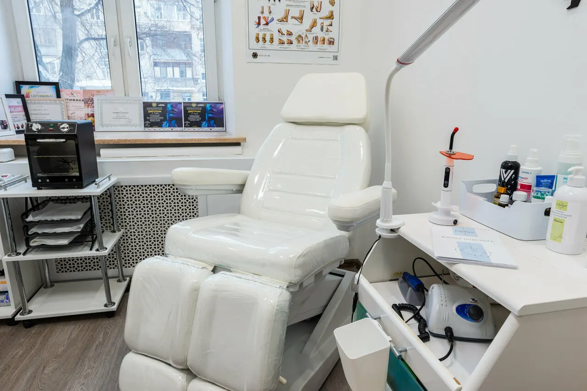
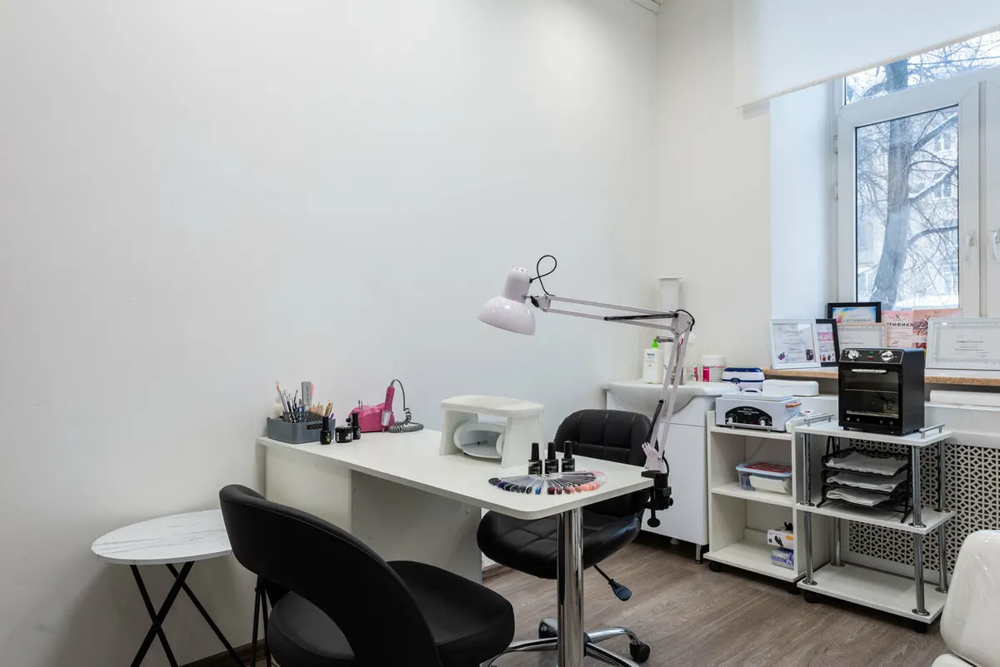
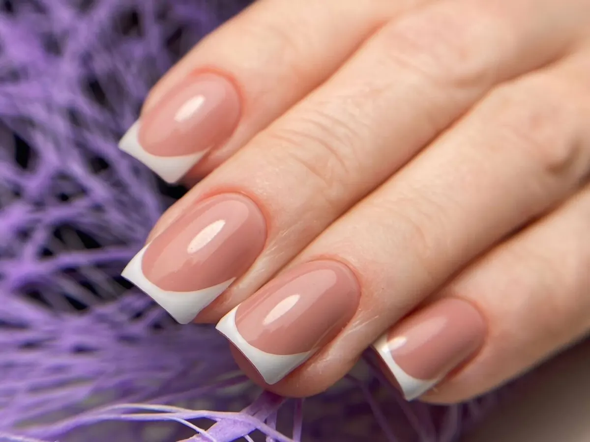
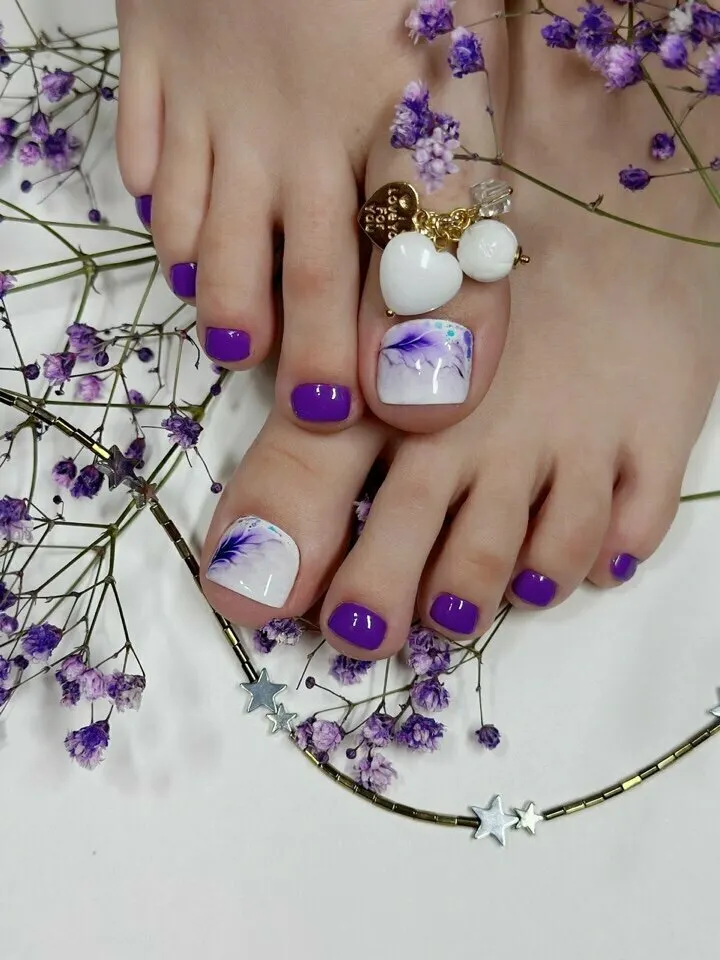

Студия у метро Дмитровская · Москва
Маникюр, педикюр и подолог у Дмитровской – цена и время до записи
Маникюр 1800 ₽, гель-лак 900 ₽, педикюр пальчиков 2500 ₽. У каждой услуги – цена и время. Выберите услугу, день и время, запись уйдёт в WhatsApp студии.
- Женский и мужской маникюр и педикюр
- Подолог, брови и ресницы в той же студии
- Ежедневно с 10:00 до 22:00, запись заранее

Цена и время названы до записи
Прайс с карточки студии на Яндекс.Картах. В подписи – сколько длится услуга, как указано на карточке.
Маникюр
- Комбинированный, аппаратный, обрезной50 мин1 800 ₽
- Мужской маникюр55 мин1 800 ₽
- Покрытие гель-лак20 мин900 ₽
- Покрытие френч30 мин800 ₽
- Покрытие LUXIO20 мин1 500 ₽
- Укрепление гелем, акригелем, полигелем1 000 ₽
- Снятие лакового покрытия10 мин150 ₽
Педикюр
- Обработка только пальчиков30 мин2 500 ₽
- SMART / аппаратный педикюробработка стоп, кутикулы и нанесение цвета3 500 ₽
- Покрытие гель-лаком20 мин700 ₽
- Реконструкция ногтя15 мин1 000 ₽
- Консультация по аппаратному педикюру15 мин1 500 ₽
- Массаж стоп15 мин500 ₽
Дизайн
- Стемпинг, слайдер или омбреодин ноготь100 ₽
- Ручная росписьодин ноготь, 10 мин150 ₽
- Втирка на все ногти1 000 ₽
- Стразы3 штуки50 ₽
Брови и ресницы
- Коррекция бровей10 мин700 ₽
- Архитектура бровей20 мин1 000 ₽
- Окрашивание бровей800 ₽
- Окрашивание ресниц700 ₽
- Наращивание ресниц3 000 ₽
Здесь основные позиции. Полный прайс – другие покрытия, подология, перманентный макияж, LPG-массаж – на карточке студии в Яндекс.Картах.
Как проходит запись
- 01
Выбираете услугу, день и время
В окне записи выше: услуга из прайса, день на неделю вперёд, свободное время.
- 02
Нажимаете «Записаться»
Откроется WhatsApp студии, в сообщении уже готов текст с вашим выбором.
- 03
Приходите на улицу Яблочкова, 2/1
Кабинеты 5 и 9, у метро Дмитровская.



Что пишут гости студии
Бережно и стерильно
«Очень боялась идти к подологу, но здесь все сделали бережно, стерильно и быстро» – Юля Д., сентябрь 2026.
Мастер, к которому возвращаются
«Была у хороших мастеров, я бы сказала, что она лучшая» – Наталья Довбуш, август 2025.
Много услуг в одном месте
«Многообразие услуг» – milana zam, июль 2025.
Без долгого ожидания
Время ожидания – 100 % положительных оценок, педикюр – тоже 100 % (по данным карточки).
Отзывы с Яндекс.Карт
«Большое спасибо за профессионализм мастера. Очень боялась идти к подологу, но здесь все сделали бережно, стерильно и быстро. Врач аккуратный и внимательный, дала рекомендации по уходу. Очень рекомендую, теперь хочу прийти сюда на маникюр.»
Юля Д. · 14 сентября 2026
«Попала сюда случайно. Мою запись в другом салоне неожиданно отменили, пришлось спешно искать другое место. Выбор пал сюда. Нисколько не пожалела. Делала педикюр у ФАИ. Я бы назвала её Фея😊. Сделала все идеально. Была у хороших мастеров, я бы сказала, что она лучшая. Приятный собеседник и мастер своего дела. 👍»
Наталья Довбуш · 2 августа 2025
«Отличный салон,высококвалифицированные и вежливые сотрудники,многообразие услуг Делают отличное наращивание ногтей,сейчас сложно найти хороших мастеров!»
milana zam · 5 июля 2025
Отзывы с карточки на Яндекс.Картах, без правок.
Частые вопросы
Сколько стоит и сколько длится маникюр?
Комбинированный, аппаратный или обрезной маникюр – 1800 ₽, 50 минут. Покрытие гель-лаком – 900 ₽, 20 минут.
Есть ли мужской маникюр и педикюр?
Да, на карточке студии указаны женский и мужской маникюр и педикюр. Мужской маникюр – 1800 ₽, 55 минут.
Принимает ли подолог?
Гости пишут об этом в отзывах: «все сделали бережно, стерильно и быстро». Услуги подологии и стоимость уточните у студии при записи.
Делаете ли брови и ресницы?
Да: коррекция бровей – 700 ₽, архитектура бровей – 1000 ₽, окрашивание бровей – 800 ₽, окрашивание ресниц – 700 ₽, наращивание ресниц – 3000 ₽.
Нужно ли записываться заранее?
Да, на карточке студии указана предварительная запись. Выберите услугу, день и время в окне записи.
Где вы находитесь и когда работаете?
Москва, улица Яблочкова, 2/1, кабинеты 5 и 9, у метро Дмитровская. Ежедневно с 10:00 до 22:00.
Запись на ближайшие дни
- Адрес
- улица Яблочкова, 2/1, кабинеты 5 и 9, Москва
- Часы
- Ежедневно 10:00–22:00
- Телефон
- +7 (903) 766-29-68